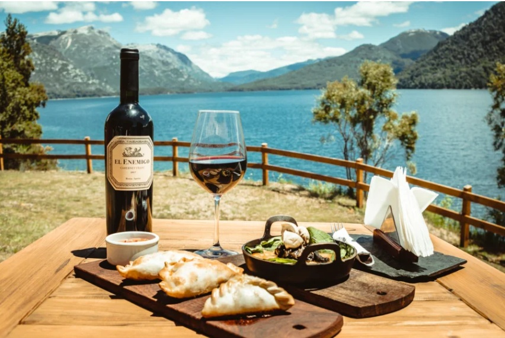

Nuestra Historia
Sabores con raíces puntanas desde 1987
Todo comenzó en 1987, cuando una familia puntana decidió abrir las puertas de un pequeño bodegón al pie de las sierras.
La idea era simple, pero profunda: reunir a la gente alrededor de una mesa, compartir el sabor de lo casero y mantener vivas las recetas de siempre.
Inspirados por las comidas del campo y los almuerzos familiares de los domingos, Maximiliano López y Sofía Lusara apostaron por un espacio donde el tiempo se detuviera entre el aroma del pan recién horneado y el sonido del vino sirviéndose en las copas.
Con el paso de los años, aquel bodegón se transformó en un clásico de San Luis, sin perder su esencia: platos abundantes, ingredientes locales, y ese trato cálido que hace sentir a cada visitante como en casa.
Nuestro equipo
Detrás de cada plato hay personas que aman lo que hacen.
Desde los cocineros que madrugan para preparar las carnes y masas, hasta el personal de salón que recibe a cada cliente con una sonrisa.
Somos una gran familia, dentro y fuera de la cocina.
Quienes hacen posible que cada visita sea especial: nuestro equipo de cocina, mozos, y la familia que sigue soñando detrás del mostrador.
Un negocio de familia
Hoy, más de tres décadas después, la segunda generación sigue al frente del restaurante, cuidando cada detalle con el mismo amor con que comenzó todo.
La cocina sigue siendo el corazón del lugar, donde se mezclan las tradiciones puntanas con un toque de creatividad.
Cada receta guarda una historia: el pastel de papas de la abuela, el asado a las brasas del abuelo, las empanadas que se repiten en cada fiesta familiar.
Nada se olvida, todo se celebra.
Más que un restaurante
Para nosotros, este lugar no es solo un bodegón. Es un punto de encuentro, un pedacito de historia puntana servido en cada plato.
Porque los sabores cambian con el tiempo, pero la calidez de nuestras raíces nunca se pierde.
